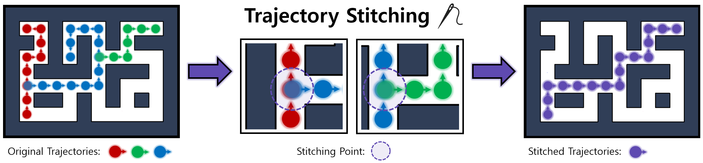

Existing offline hierarchical reinforcement learning methods rely on high-level policy learning to generate subgoal sequences. However, their efficiency degrades as task horizons increase, and they lack effective strategies for stitching useful state transitions across different trajectories. We propose Graph-Assisted Stitching (GAS), a novel framework that formulates subgoal selection as a graph search problem rather than learning an explicit high-level policy. By embedding states into a Temporal Distance Representation (TDR) space, GAS clusters semantically similar states from different trajectories into unified graph nodes, enabling efficient transition stitching. A shortest-path algorithm is then applied to select subgoal sequences within the graph, while a low-level policy learns to reach the subgoals. To improve graph quality, we introduce the Temporal Efficiency (TE) metric, which filters out noisy or inefficient transition states, significantly enhancing task performance. GAS outperforms prior offline HRL methods across locomotion, navigation, and manipulation tasks. Notably, in the most stitching-critical task, it achieves a score of 88.3, dramatically surpassing the previous state-of-the-art score of 1.0. Our source code is available at: https://github.com/qortmdgh4141/GAS.

Example of trajectory stitching